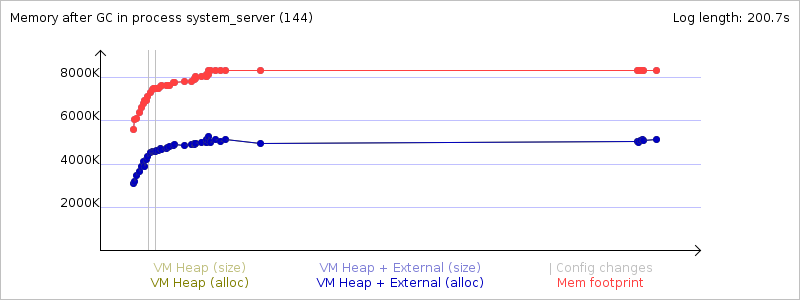
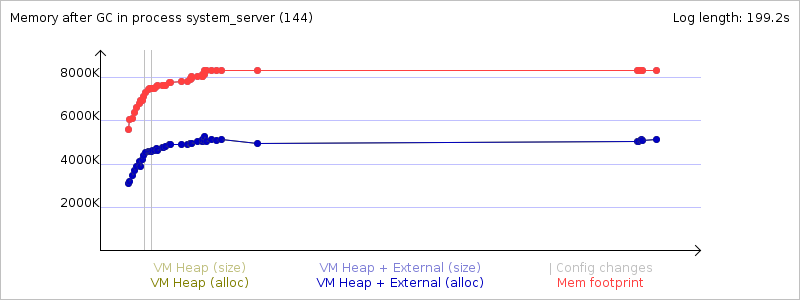

Mem info from 'meminfo' service:
** MEMINFO in pid 144 [system] **
native dalvik other total
size: 14412 8519 N/A 22931
allocated: 12122 5328 N/A 17450
free: 69 3191 N/A 3260
(Pss): 2854 4706 18515 26075
(shared dirty): 748 1368 4940 7056
(priv dirty): 2824 1400 14232 18456
Objects
Views: 0 ViewRoots: 0
AppContexts: 1 Activities: 0
Assets: 6 AssetManagers: 6
Local Binders: 99 Proxy Binders: 148
Death Recipients: 63
OpenSSL Sockets: 0
SQL
heap: 290 MEMORY_USED: 290
PAGECACHE_OVERFLOW: 91 MALLOC_SIZE: 50
DATABASES
pgsz dbsz Lookaside(b) Dbname
1 19 71 accounts.db
1 221 18 yellowpage.db
1 26 72 settings.db
Asset Allocations
zip:/system/app/GoogleServicesFramework.apk:/resources.arsc: 1555K
zip:/data/app/com.sonymobile.chkbugreport.testapp-1.apk:/resources.arsc: 1K
Memory usage from GC system logs:
Memory usage from GC event logs:
